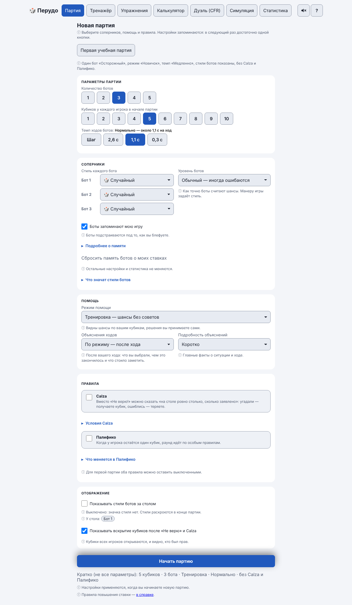
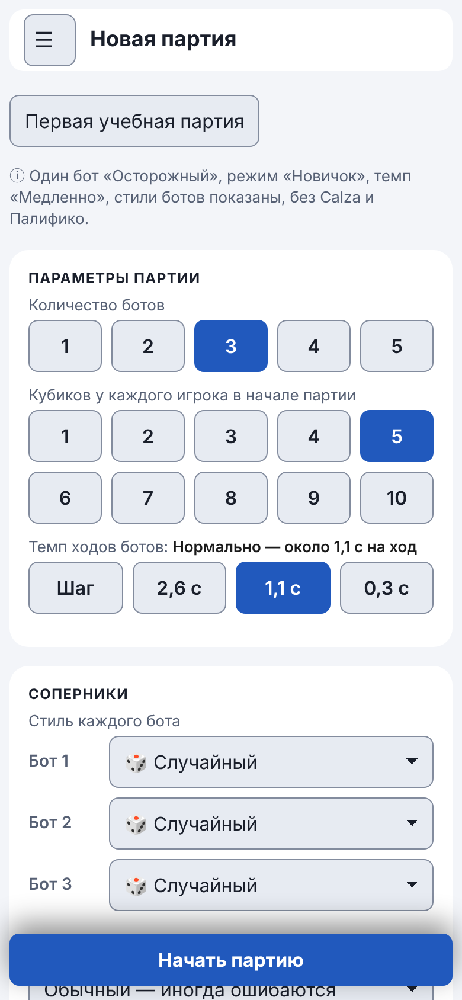
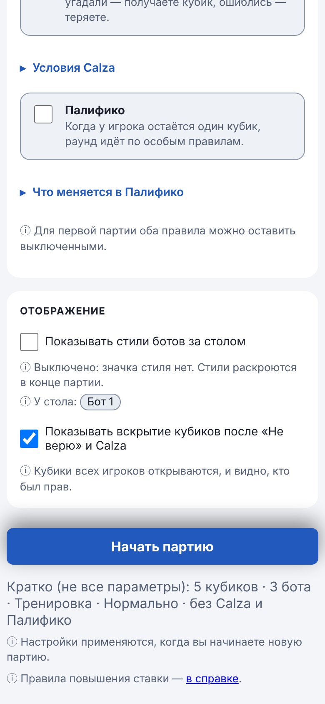

Руководство / Настройки партии и боты
Настройки партии и боты
Перед первой партией настройки показаны на экране подготовки в карточках «Параметры партии», «Соперники», «Помощь», «Правила» и «Отображение». Звук приложения включается отдельно, значком в шапке (см. ниже).

Первый раз? Кнопка «Первая учебная партия» в начале экрана подготовки выставляет спокойные настройки одним нажатием: один бот «Осторожный», режим «Новичок», темп «Медленно», стили ботов показаны, Calza и Палифико выключены. Партия при этом не начинается: проверьте настройки и нажмите «Начать партию». Если эти настройки уже выставлены, кнопка подсвечена, а под ней написано, что осталось нажать «Начать партию». После первой сыгранной партии кнопка исчезает: она нужна только для самого первого раза. Остальные настройки можно потом вернуть кнопкой «Сбросить к стандартным настройкам».
Что можно настроить
- Количество ботов — от 1 до 5 кнопками (за столом получается от 2 до 6 игроков). Карточка «Параметры партии».
- Кубиков у каждого игрока в начале партии — от 1 до 10 кнопками. Та же карточка.
- Стиль каждого бота — список «Бот 1, Бот 2…» слева в карточке «Соперники»: по умолчанию у всех «Случайный» (см. ниже).
- Уровень ботов — справа от стилей: как точно боты считают шансы. Манеру игры (блеф, доверие, осторожность) задаёт не уровень, а стиль.
- Боты запоминают мою игру — подстройка ботов под вас. В раскрытии «Подробнее о памяти» видно, сколько ставок проверено и сколько из них ложных; старые наблюдения теряют вес. Кнопка «Сбросить память ботов о моих ставках» стирает только память; остальные настройки и статистика не меняются.
- Темп ходов ботов — четыре кнопки в карточке «Параметры партии»: «Шаг» (бот ходит только после кнопки), «2,6 с» (медленно), «1,1 с» (нормально) и «0,3 с» (быстро). Время — это пауза перед ходом бота. Название выбранного темпа видно в подписи над кнопками. «Пошагово»: бот ходит только после кнопки «Ход бота →», которая на его очереди занимает место кнопок «Не верю!», «Calza» и «Ставлю». Окно вскрытия в этом темпе закрывается тоже вручную.
- Показывать стили ботов за столом — карточка «Отображение»: значок стиля рядом с аватаром бота, образец («Бот 1 🛡️») показан под галочкой.
- Показывать вскрытие кубиков после «Не верю» и Calza — окно с кубиками всех игроков после проверки. Там же, в «Отображении».
- Строка под кнопкой «Начать новую партию» начинается со слов «Кратко (не все параметры)»: в ней число кубиков и ботов, режим помощи, темп и правила, но не стили, уровень и объяснения. Правила повышения ставки описаны в правилах игры.
- Звук приложения — выключен по умолчанию и включается одним значком в шапке рядом с «?»: динамик с дугами — включён, динамик с крестом — выключен. На телефоне тот же переключатель лежит в меню ☰ пунктом «Звук включён / выключен». Звук общий для всего приложения и запоминается на устройстве. Громкость регулируется на самом устройстве. Слышны сигнал вашего хода, «Не верю!», потеря кубика, конец партии. Звуки создаются прямо в браузере, вибрации нет. На быстром темпе ставки ботов и раздача не озвучиваются, а в фоновой вкладке звука нет.
Режим помощи
- Новичок — советы и шансы: приложение показывает шансы и прямо советует ход.
- Тренировка — шансы без советов (по умолчанию): шансы видны, но решаете вы сами.
- Игра — без подсказок: как за настоящим столом.
Правила
Две карточки с переключателем и одной строкой про суть правила. Условия Calza и отличия Палифико спрятаны в раскрытиях «Условия Calza» и «Что меняется в Палифико» прямо под карточками. Для первой партии оба правила можно оставить выключенными.
- Calza — вместо «Не верю!» можно сказать «Calza»: «на столе ровно столько, сколько заявлено». Угадали — получаете кубик, ошиблись — теряете. Доступна, пока за столом осталось не меньше половины начальных кубиков.
- Палифико — когда остаётся один кубик, раунд идёт без джокеров и с фиксированной цифрой; один раз на игрока, пока за столом больше двух игроков.
Подробнее об обоих правилах написано в правилах игры.


Запоминание настроек
Когда вы нажимаете «Начать партию», приложение сохраняет все эти настройки. После перезагрузки страницы они возвращаются на место, и достаточно одной кнопки. Если поменять поля, но не начать партию, прежние настройки сохранятся.
Кнопка «Сбросить к стандартным настройкам» под «Начать партию» появляется, когда настройки отличаются от стандартных: она возвращает значения по умолчанию и стирает сохранённое. Настройки хранятся в браузере и входят в резервную копию.
Настройки применяются к новой партии. Во время игры их можно открыть значком ⚙️ (на компьютере это вкладка справа от стола), но изменения заработают после нажатия «Начать новую партию».
Боты
За столом вы играете против компьютерных соперников. Бот видит только свои кубики, общее число кубиков и текущую ставку, в чужие кубики он не заглядывает. Как и живой игрок, он считает шансы, иногда блефует и иногда ошибается.
Стили
У каждого бота есть стиль, то есть манера игры. По умолчанию стили скрыты: как за настоящим столом, вы не знаете заранее, как играет сосед, и судите по его ставкам. В конце партии значки показываются. Если хотите видеть значок стиля у аватара бота всё время, включите галочку «Показывать стили ботов» в карточке «Отображение».
| Стиль | Как играет | Как с ним играть |
|---|---|---|
| 🛡️ Осторожный | Ставит только надёжно, почти не блефует | Если он повысил, чаще всего он прав: верьте |
| 🎭 Блефующий | Часто завышает ставку | Проверяйте его ставки на «Не верю!» |
| 🧠 Умный | Считает вероятности, умеет говорить Calza, лучше всех подстраивается под вас | Самый сильный соперник |
| 🔥 Агрессор | Быстро взвинчивает ставки, редко проверяет | Не давайте себя разогнать: проверяйте на «Не верю!», когда ставка уже слишком высока |
| 🧐 Скептик | Не доверяет чужим ставкам, часто говорит «Не верю!» | Делайте надёжные ставки, а блефуйте реже |
Для каждого бота стиль выбирается отдельным списком: «🎲 Случайный» (он выбран у всех, пока вы не решите иначе) или один из пяти стилей. Раздачи по порядку нет, поэтому даже без значков нельзя понять по номеру бота, как он играет. Так можно, например, посадить за стол пятерых скептиков и потренироваться против них. Если ничего не выбирать, первые три бота получат «Осторожного», «Блефующего» и «Умного» по кругу. При 4–5 ботах стили повторяются.
Уровень ботов
Он показывает, как часто боты ошибаются в оценке шансов, как живые игроки, которые считают «на глаз».
- Лёгкий — ошибаются часто, подходит для начала.
- Обычный (по умолчанию) — ошибаются иногда.
- Сильный — считают точно и не ошибаются.
Размах ошибки зависит и от стиля: «Блефующий» и «Агрессор» ошибаются больше, «Умный» меньше всех.
Память: боты запоминают вашу игру
Если галочка «Боты запоминают мою игру» включена (по умолчанию), боты замечают, как часто ваши проверенные ставки оказывались ложными.
- Если вы часто блефуете, боты начинают чаще говорить вам «Не верю!».
- Если вы играете честно, боты чаще верят вашим ставкам.
Сильнее всех подстраивается «Умный», почти не реагирует «Агрессор». Под галочкой написано, сколько ваших ставок боты уже видели. Пока их меньше трёх, боты только «присматриваются»: поправка на ваш стиль совсем небольшая.
Боты видят только проверенные ставки, как и живой соперник за столом: если вашу ставку никто не проверил, остаётся неизвестным, блефовали вы или нет. Память хранится только в вашем браузере и сохраняется между партиями. Кнопка «Сбросить память ботов о моих ставках» стирает её, «Сбросить всё» на вкладке «Статистика» тоже. Чтобы боты не подстраивались, снимите галочку (изменение применяется к новой партии).